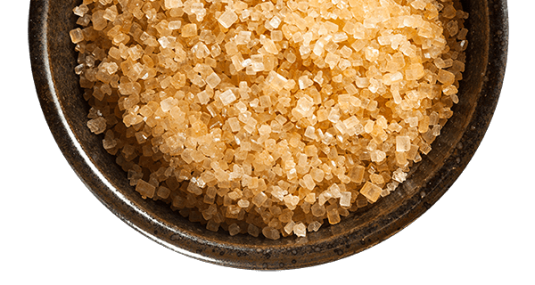
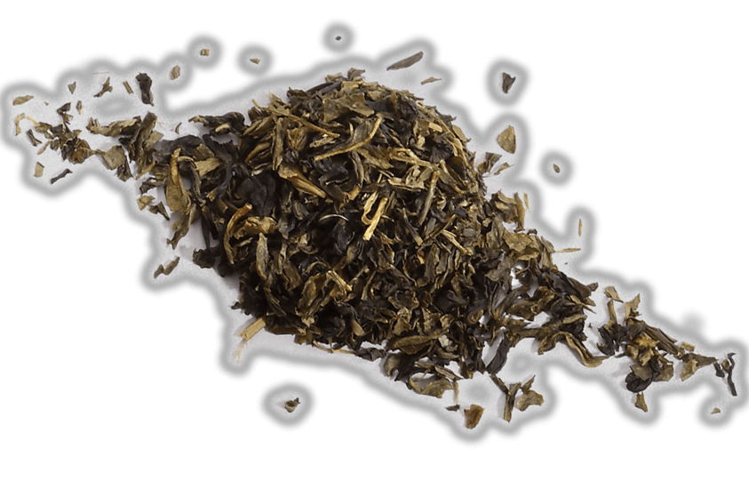

Making our own sugar cane syrup
We are committed to make our own sugar cane syrup. By picking the all natural, high quality sugar canes, boiling process in house creates the most original flavour. This sweetness is delicate but never overpowering.
Freshly handcrafted tapioca
We insist on making the tapioca from scratch: making the dough, kneading and rolling the dough into small balls, this procedure creates better texture and aroma for the tapioca. Each bite is unique,
satisfying the craving for the perfect taste

Carefully Selected Tea Leaves
Quality is our guarantee. From choosing the type of tea leaves,
the hand-picking process and roasting with other ingredients,
each cup of tea has its own determined aroma and taste.
The flavour may be short-lived, the memory everlasting.